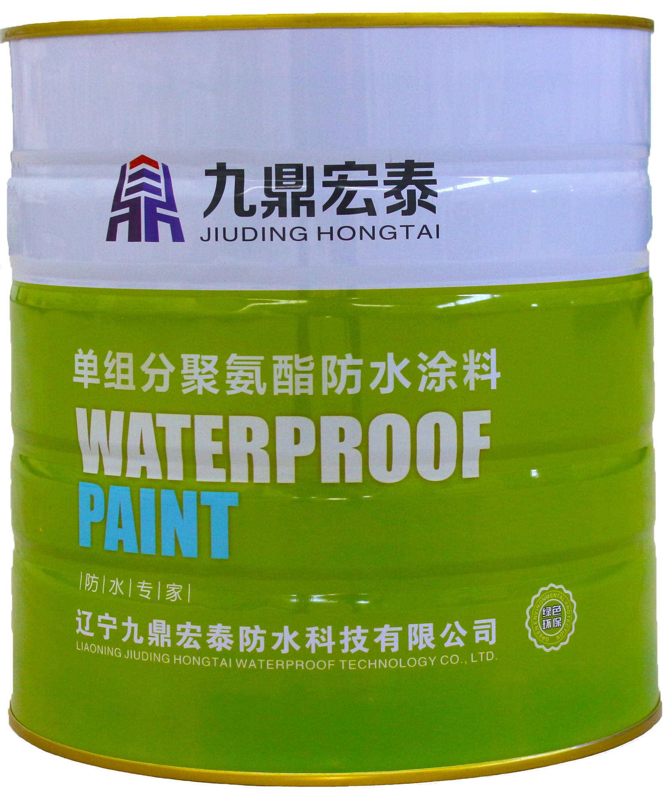

当前位置：
当前位置：
产品概述
DNC非固化橡胶沥青防水涂料是以橡胶粉、沥青和特殊添加剂为主要原料，在应用状态下长期保持黏性膏状体的具有蠕变性的一种新型防水材料。

产品特性
● 超高固含量：固化物含量大于99%，几乎没有挥发物。
● 永不固化：施工后始终保持原有的胶状状态，性能稳定，不发生老化现象。
● 蠕变性极强：施工时材料不会分离，形成整体无缝防水层，更适于基层变形和结构裂缝。
● 粘结性强：可在潮湿基面施工，且能与任何异物粘结。
● 自愈性强：施工时即使出现防水层破损也能自行修复，维持完整的防水层。
● 施工限制小：既可刮抹施工，也可喷涂施工，既可在常温施工，也可在零度以下施工。
● 耐候环保：耐久、耐腐、耐高低温；无毒、无味、无污染且不燃于火。
● 复合式防水层：可与其他防水材料同时使用，形成复合式防水层，提高防水效果。
执行标准
JC/T2428-2017 非固化橡胶沥青防水涂料
| 序号 | 项 目 | 技术指标 | |
|---|---|---|---|
| 1 | 闪点/℃ （开口） ≥ | 180 | |
| 2 | 固含量/% ≥ | 98 | |
| 3 | 粘结性能 | 干燥基面 | 100%内聚破坏 |
| 潮湿基面 | |||
| 4 | 延伸性/㎜ ≥ | 15 | |
| 5 | 低温柔性/℃ | -20，无断裂 | |
| 6 | 耐热性/℃ | 65 | |
| 无滑动、流淌、滴落 | |||
| 7 | 热老化 （70℃，168h） | 延伸性/ ≥ | 15 |
| 低温柔性 | -15℃，无断裂 | ||
应用领域
适用于基层起伏、应力较大的基层和经常性发生形变的部位；特别适用于不能使用明火施工、机械施工和冷粘剂施工的工程等。